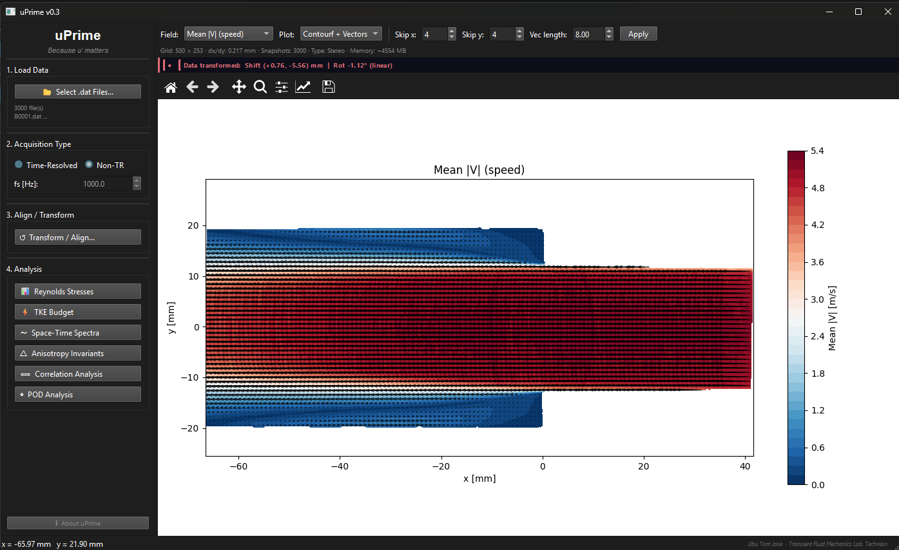

Turbulence is complex. Analysis shouldn’t be.
uPrime is a GUI-based software for post-processing and turbulence analysis of velocity field data from PIV and CFD. No scripting. No setup. Just analysis.
View on GitHub View DOI
Built for experimental fluid mechanics workflows.